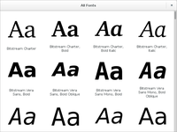
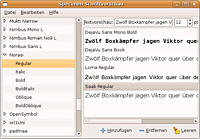
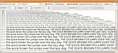
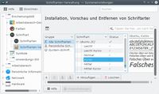

Fontmanager
Zum Verständnis dieses Artikels sind folgende Seiten hilfreich:
Pakete aus dem Quellcode erstellen, optional
Programme starten, optional
Einen Programmstarter erstellen, optional
Fontmanager sind Programme, um komfortabel Schriftarten, auch Fonts genannt, zu betrachten, zu vergleichen und zu installieren. Dieser Artikel soll jedoch nicht die Installation von Schriften im System erklären, sondern nur Programme vorstellen, die das Arbeiten mit Schriftarten komfortabler gestalten.
Die Installation von Schriftarten ist im Artikel Schriften ausführlich erklärt.
Font Manager¶
Font Manager orientierte sich ursprünglich an Apples Font Book und ist für die Vorschau, Aktivierung und Deaktivierung von System- wie Benutzerschriften gedacht. Es bietet einen besonders einfachen und benutzerfreundlichen Zugang zu installierten Schriften. Darüber hinaus ermöglicht es die Installation von neuen Schriften im Homeverzeichnis des Benutzers.
Fontmatrix¶
Fontmatrix ist ein umfangreiches Programm, um den Überblick bei den installierten Schriftarten zu behalten. Neben der üblichen Vorschaufunktion können Schriftarten mit Tags gruppiert, Informationen zur Schriftart (Art, Version, Urheber usw.) ausgegeben, sowie alle Zeichen einer Schrift angezeigt und installierte Schriften als PDF-Katalog ausgegeben werden.
GNOME Font Viewer¶

Der GNOME Font Viewer  ist fester Bestandteil der Desktop-Umgebung GNOME und damit auch von Ubuntu GNOME. Nutzt man einen anderen Desktop, muss folgendes Paket aus den offiziellen Paketquellen installiert werden [1]:
ist fester Bestandteil der Desktop-Umgebung GNOME und damit auch von Ubuntu GNOME. Nutzt man einen anderen Desktop, muss folgendes Paket aus den offiziellen Paketquellen installiert werden [1]:
gnome-font-viewer
 mit apturl
mit apturl
Paketliste zum Kopieren:
sudo apt-get install gnome-font-viewer
sudo aptitude install gnome-font-viewer
GNOME Specimen¶

GNOME Specimen ist ein Programm, um Schriften vergleichen zu können. Sämtliche im System installierten Schriften werden links in einer Baumansicht aufgelistet. Über "Hinzufügen" kann man nun einzelne Schriften zum Vergleichen auswählen.
Das Programm ist aus den Paketquellen von Ubuntu über das folgende Paket installierbar [1]:
gnome-specimen (universe)
mit apturl
Paketliste zum Kopieren:
sudo apt-get install gnome-specimen
sudo aptitude install gnome-specimen
Nach der Installation kann man es über "Anwendungen -> Grafik -> Specimen Schriftvorschau" starten.
Gwaterfall¶
 Gwaterfall ist ein Programm, um Schriftarten schnell und übersichtlich miteinander vergleichen zu können. Ein Beispieltext wird in verschiedenen Schriftgrößen dargestellt, wobei Kantenglättung und weitere Verfahren zur Verbesserung der Schriftdarstellung de-/aktiviert werden können. Das Programm ist in den Paketquellen von Ubuntu enthalten und kann über das folgende Paket installiert [1] werden:
gwaterfall (universe)
mit apturl
Paketliste zum Kopieren:
sudo apt-get install gwaterfall
sudo aptitude install gwaterfall
Anschließend kann das Programm über den Befehl
waterfall
gestartet [3] werden. Einen Programmstarter muss man bei Bedarf selber anlegen [4].
KDE Plasma¶
 Die KDE Schriftartenverwaltung ist fester Bestandteil der Desktopumgebung KDE Plasma und lässt sich in den Systemeinstellungen aufrufen. Es wird unterschieden in System- und Benutzerschriftarten. Über die entsprechenden Schaltflächen lassen sich Schriftarten hinzufügen und entfernen.
Außerdem bietet der KDE Dateimanager Dolphin die Möglichkeit die Schriftarten aufzulisten. Dazu einfach in die Adresszeile des Dateimanagers fonts: eintippen und die Entertaste drücken.
Nautilus¶
Das bereits bei Konqueror gesagte trifft auch auf den Dateimanager Nautilus zu. Allerdings sind bei beiden die Vorschaumöglichkeiten im Vergleich mit den anderen hier genannten Programme sehr bescheiden.
TypeCatcher¶
TypeCatcher ist ein Spezialprogramm für die Google Fonts . Diese umfangreiche Schriftsammlung für die Webtypografie lässt sich damit anzeigen, durchsuchen oder einzelne Schriften auf Wunsch herunterladen. Erst ab Ubuntu 13.10 in den offiziellen Paketquellen enthalten, bietet der Programmautor für ältere Ubuntu-Versionen ein PPA an.
 Übersichtsartikel
Übersichtsartikel- Erstellt mit Inyoka
-
 2004 – 2017 ubuntuusers.de • Einige Rechte vorbehalten
2004 – 2017 ubuntuusers.de • Einige Rechte vorbehalten
Lizenz • Kontakt • Datenschutz • Impressum • Serverstatus -
Serverhousing gespendet von